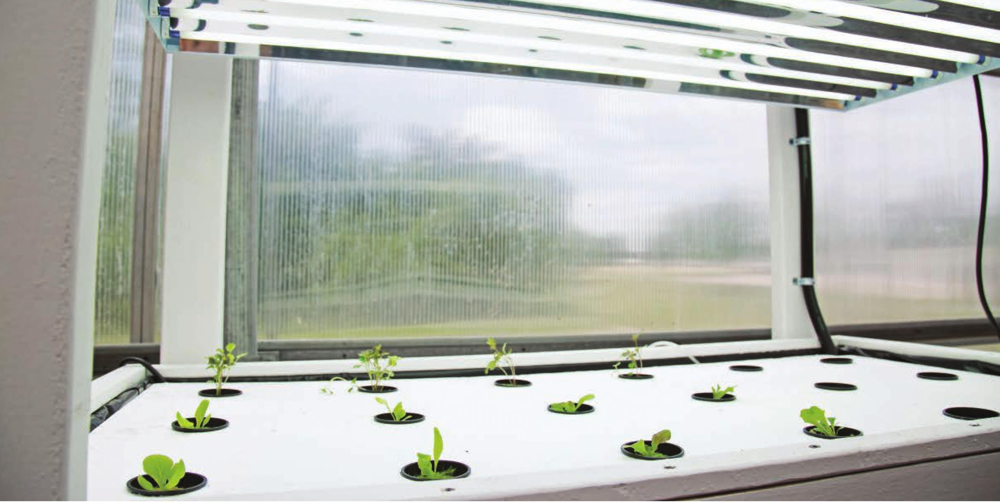
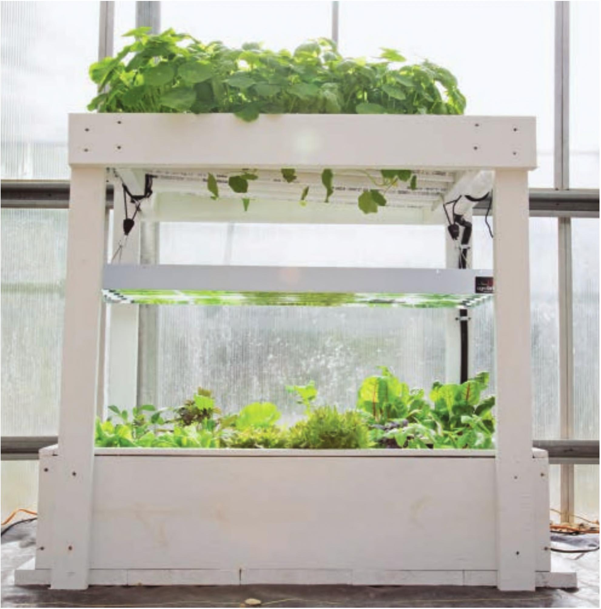

with a small root system. Some growers even use seedlings started in soil in their floating rafts. Soilstarted seedlings can be messy and may require more frequent cleaning of the garden, but they are an option. Maintenance Most leafy greens can be grown in this system from transplant to harvest without any maintenance of the system. For longer-term crops, see the nutrient solution management strategies detailed in the System Maintenance chapter. Additional Options This floating raft garden is used as a reservoir in the DIY nutrient film technique (NFT) system later in this chapter. For this NFT add-on, a frame was constructed to hold PVC pipes above the raft garden. This frame also supports a 4-foot six-tube T5 grow light that acts as a supplemental light source in additional to natural sunlight present in the greenhouse. If this system were placed indoors, this same 4-foot six-tube T5 grow light would be capable of providing all the light required by these crops. See the DIY nutrient film technique (NFT) for a step-by-step guide to adding a second level of production to the floating raft garden. 58 DIY HYDROPONIC GARDENS

